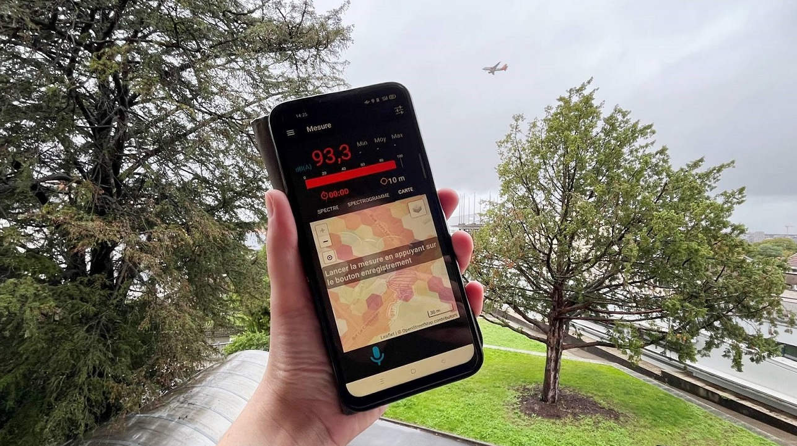

Préambule
Sur cette page nous recensons les actions mises en oeuvre dans le cadre du projet SonoRezé. Ces actions ont été décidées collectivement à l'occasion des ateliers "Diagnostic / actions" auquels ont participé les citoyens, les élus et les chercheurs.
Cette page sera alimentée au fur et à mesure des ateliers et de l'avancement des actions.
Atelier n°1
12/10/2023
La réunion
Le 12 octobre 2023 s'est tenu le premier Atelier public "Diagnostic / actions", qui réunissait des citoyens, des élus et des chercheurs du projet SonoRezé.
Cet atelier avait pour objectif de faire émerger des thématiques et pistes d'actions à mettre en oeuvre pour tendre vers une amélioration des environnements sonores sur la ville de Rezé.
De manière synthétique, cet atelier a suivit la trame suivante :
1. tour de table et présentation des attentes de chacun,
2. exercice "Carte perceptive" ou comment représenter sa ville sous le prisme de la perception du paysage sonore,
3. définition et débat sur les thématiques d'actions.
Au terme de cet atelier, les participants ont collégialement acté le fait que la première action devant être travaillée dans le cadre de ce projet devrait concerner les nuisances sonores liées au trafic aérien.
Il a également été convenu que d'autres thématiques (comme le bruit du périphérique, ...) seront traitées ultérieurement.
Pour plus de détail, vous êtes invité à lire le compte-rendu détaillé, disponible ci-dessous.

Protocole expérimental
Pour faire suite à cet atelier nous avons décidé d'expérimenter un protocole de mesure des niveaux sonores aériennes à l'aide de l'application NoiseCapture. De manière concrète nous invitons les citoyens à réaliser des mesures depuis chez eux (ou depuis leur travail si c'est également à Rezé) sur une durée assez longue (2h si possible) de manière fixe.
Pour ce faire, rien de plus simple :
1. Activez la localisation (GPS) de votre smartphone,
2. Placez votre smartphone à l'extérieur, dans un endroit à l'abri (du vent et de la pluie), le micro orienté vers l'extérieur,
3. Avec NoiseCapture, mesurez aux heures convenues et arrêtez au bout de 2h (ou avant si besoin de votre appareil).
Les dates et créneaux retenus sont les suivants :
- Vendredi 03 novembre (06h00-08h00)
- Mardi 07 novembre (18h30-19h30)
Les mesures ainsi récoltées seront traitées par les chercheurs en acoustique du projet et serviront de base de travail pour le deuxième Atelier prévu le 16 novembre (à 18h30) qui sera consacré à ce sujet.

Atelier n°2
16/11/2023
La réunion
Le 16 novembre 2023 s'est tenu le deuxième Atelier public "Diagnostic / actions", qui réunissait des citoyens, des élus et des chercheurs du projet SonoRezé.
Comme décidé à l'issue du 1er atelier, cette réunion avait pour thème le bruit aérien.
De manière synthétique, cet atelier a suivit la trame suivante :
1. tour de table et rappel de l'objectif du projet et des attentes de ce 2ème atelier,
2. état des connaissances en matière de bruit aérien et retour sur l'expérimentation NoiseCapture depuis chez soi,
3. groupes de travail sur les éléments que les participants aimeraient montrer ou améliorer,
4. présentation des outils actuellement mobilisables : la modélisation, la mesure et l'enquête,
5. restitution des groupes de travail,
6. discussions / débats sur les éléments ainsi collectés.
Cet atelier a permis de récolter une riche matière qu'il convient maintenant d'analyser pour voir quelles sont les perspectives possibles en terme d'actions. La prochaine réunion, fixée au 12 décembre, permettra de travailler plus concrètement sur ce point.
La présentation faite par Arnaud Can à propos de l'état de l'art sur le bruit aérien est accessible ICI.
Pour plus de détail, vous êtes invité à lire le compte-rendu détaillé, disponible ci-dessous.